import pandas as pd
import numpy as np
from katlas.data import *
from katlas.plot import *
from katlas.pssm import *
from katlas.feature import *
from matplotlib import pyplot as plt
import seaborn as sns
import math
from sklearn.cluster import KMeansPlot heatmap and logo of CDDM
Setup
df = Data.get_ks_dataset()df.head()| kin_sub_site | kinase_uniprot | substrate_uniprot | site | source | substrate_genes | substrate_phosphoseq | position | site_seq | sub_site | substrate_sequence | kinase_on_tree | kinase_genes | kinase_group | kinase_family | kinase_pspa_big | kinase_pspa_small | kinase_coral_ID | num_kin | |
|---|---|---|---|---|---|---|---|---|---|---|---|---|---|---|---|---|---|---|---|
| 0 | O00141_A4FU28_S140 | O00141 | A4FU28 | S140 | Sugiyama | CTAGE9 | MEEPGATPQPYLGLVLEELGRVVAALPESMRPDENPYGFPSELVVC... | 140 | AAAEEARSLEATCEKLSRsNsELEDEILCLEKDLKEEKSKH | A4FU28_S140 | MEEPGATPQPYLGLVLEELGRVVAALPESMRPDENPYGFPSELVVC... | 1 | SGK1 SGK | AGC | SGK | Basophilic | Akt/rock | SGK1 | 22 |
| 1 | O00141_O00141_S252 | O00141 | O00141 | S252 | Sugiyama | SGK1 SGK | MTVKTEAAKGTLTYSRMRGMVAILIAFMKQRRMGLNDFIQKIANNS... | 252 | SQGHIVLTDFGLCKENIEHNsTtstFCGtPEyLAPEVLHKQ | O00141_S252 | MTVKTEAAKGTLTYSRMRGMVAILIAFMKQRRMGLNDFIQKIANNS... | 1 | SGK1 SGK | AGC | SGK | Basophilic | Akt/rock | SGK1 | 1 |
| 2 | O00141_O00141_S255 | O00141 | O00141 | S255 | Sugiyama | SGK1 SGK | MTVKTEAAKGTLTYSRMRGMVAILIAFMKQRRMGLNDFIQKIANNS... | 255 | HIVLTDFGLCKENIEHNsTtstFCGtPEyLAPEVLHKQPYD | O00141_S255 | MTVKTEAAKGTLTYSRMRGMVAILIAFMKQRRMGLNDFIQKIANNS... | 1 | SGK1 SGK | AGC | SGK | Basophilic | Akt/rock | SGK1 | 1 |
| 3 | O00141_O00141_S397 | O00141 | O00141 | S397 | Sugiyama | SGK1 SGK | MTVKTEAAKGTLTYSRMRGMVAILIAFMKQRRMGLNDFIQKIANNS... | 397 | sGPNDLRHFDPEFTEEPVPNsIGKsPDsVLVTAsVKEAAEA | O00141_S397 | MTVKTEAAKGTLTYSRMRGMVAILIAFMKQRRMGLNDFIQKIANNS... | 1 | SGK1 SGK | AGC | SGK | Basophilic | Akt/rock | SGK1 | 1 |
| 4 | O00141_O00141_S404 | O00141 | O00141 | S404 | Sugiyama | SGK1 SGK | MTVKTEAAKGTLTYSRMRGMVAILIAFMKQRRMGLNDFIQKIANNS... | 404 | HFDPEFTEEPVPNsIGKsPDsVLVTAsVKEAAEAFLGFsYA | O00141_S404 | MTVKTEAAKGTLTYSRMRGMVAILIAFMKQRRMGLNDFIQKIANNS... | 1 | SGK1 SGK | AGC | SGK | Basophilic | Akt/rock | SGK1 | 1 |
df.shape(187066, 19)logo heatmap
df['kinase_uniprot_gene'] = df['kinase_uniprot']+'_'+df['kinase_genes'].str.split(' ').str[0]cnt = df.kinase_uniprot_gene.value_counts()cnt20 = cnt[cnt>20]cnt20kinase_uniprot_gene
P12931_SRC 2429
P29320_EPHA3 1935
P07332_FES 1903
Q16288_NTRK3 1824
Q9UM73_ALK 1794
...
Q9BUB5_MKNK1 24
Q9BWU1_CDK19 23
Q12852_MAP3K12 22
P37173_TGFBR2 21
Q09013_DMPK 21
Name: count, Length: 352, dtype: int64len(cnt20)352def convert_source(x):
if x == "Sugiyama":
return x
elif 'Sugiyama' in x and '|' in x:
return 'Both'
elif 'Sugiyama' not in x:
return 'Non-Sugiyama'df['source_combine'] = df.source.apply(convert_source)def plot_hist_num_kin(df_k):
"Plot histogram of num kin grouped by source_combine."
g = sns.displot(
df_k,
x="num_kin",
col="source_combine",
bins=100,
col_wrap=1,
height=2.0,
aspect=4,
facet_kws={'sharex': False, 'sharey': False}
)
g.set_axis_labels("Number of Kinases per Site", "Count")
# Customize titles
for ax, source in zip(g.axes.flatten(), g.col_names):
count = df_k[df_k['source_combine'] == source].shape[0]
ax.set_title(f"{source} (n={count:,})")
g.figure.suptitle("Histogram of # Kinases per Substrate Site")
# Adjust layout to make room for suptitle
plt.tight_layout()def save_show(path=None, # image path, e.g., img.svg, if not None, will save, else plt.show()
):
"Show plot or save path"
plt.savefig(path,bbox_inches='tight', pad_inches=0.05) if path is not None else plt.show()
plt.close()def plot_hist_cddm(df_k,path=None):
plot_hist_num_kin(df_k)
save_show(path)# plot_hist_cddm(df_k)def plot_cnt_cddm(df_k,path=None):
"Plot source combine counts via bar graph."
source_cnt = df_k.source_combine.value_counts()
plot_cnt(source_cnt)
plt.title('# Kinase-Substrate Pairs per Source',pad=20)
save_show(path)# plot_cnt_cddm(df_k)# set_sns()# onehot = onehot_encode(df_k.site_seq)def kmeans(onehot,n=2,seed=42):
kmeans = KMeans(n_clusters=n, random_state=seed,n_init='auto')
return kmeans.fit_predict(onehot)def filter_range_columns(df,low=-10,high=10):
positions = df.columns.str[:-1].astype(int)
mask = (positions >= low) & (positions <= high)
return df.loc[:,mask]# positions = onehot.columns.str[:-1].astype(int)
# mask = (positions >= -10) & (positions <= 10)
# onehot = onehot.loc[:,mask]
# df_k['cluster'] = kmeans(onehot,n=10,seed=42)
# pssms = get_cluster_pssms(df_k,'cluster',valid_thr=0.5)
# kmeans_cnt = df_k.cluster.value_counts()def plot_logos(pssms_df, count_dict=None, path=None):
"""
Plot all logos from a dataframe of flattened PSSMs as subplots in a single figure.
Save the full figure as an SVG.
"""
n = len(pssms_df)
hspace=0.7
# 14 is width, 1 is height for each logo
fig, axes = plt.subplots(nrows=n, figsize=(14, n * (1+hspace)),gridspec_kw={'hspace': hspace+0.1})
if n == 1:
axes = [axes] # ensure axes is iterable
for ax, idx in zip(axes, pssms_df.index):
pssm = recover_pssm(pssms_df.loc[idx])
if count_dict is not None:
plot_logo(pssm, title=f'Motif {idx} (n={count_dict[idx]:,})',ax=ax)
else:
plot_logo(pssm, title=f'Motif {idx}',ax=ax)
save_show(path=path)# plot_logos(pssms,kmeans_cnt)def get_onehot_add_cluster(df_k,n=10):
df_k = df_k.copy()
onehot = onehot_encode(df_k.site_seq)
onehot_10 = filter_range_columns(onehot)
df_k['cluster'] = kmeans(onehot_10,n=n,seed=42)
df_k = df_k.reset_index(drop=True)
return df_k,onehot_10# df_k,onehot_10 = get_onehot_add_cluster(df_k,n=10)def get_kmeans_logos(df_k,path=None):
pssms = get_cluster_pssms(df_k,'cluster',valid_thr=0.5)
kmeans_cnt = df_k.cluster.value_counts()
plot_logos(pssms,kmeans_cnt,path=path)# df_k,onehot_10 = get_onehot_add_cluster(df_k,n=10)
# get_kmeans_logos(df_k)def plot_onehot(onehot_10,hue,path=None):
plot_cluster(onehot_10,'pca',seed=42,complexity=30,hue=hue,legend=True,s=8)
plt.title('PCA of One-Hot Encoded Site Sequences (Position -10 to +10)')
save_show(path)# df_k,onehot_10 = get_onehot_add_cluster(df_k,n=10)
# plot_onehot(onehot_10,df_k.cluster)
# get_kmeans_logos(df_k)# plot_cluster(onehot_10,'pca',seed=42,complexity=30,hue=df_k.cluster,legend=True,s=8)
# plt.title('PCA of One-Hot Encoded Sequences (-10 to +10')# plot_logo_heatmap(pssm_df,title=f'{k} (n={len(df_k):,})',figsize=(17,10))from katlas.utils import *df['acceptor']=df.site.str[0]# for site_type in ['S','T','Y']:
# df_sty = df[df.kinase_uniprot_gene.upper()==site_type].copy()
# pssm_sty = get_prob(df_sty,'site_seq')
# plot_logo_heatmap(pssm_sty,title=f'{site_type} sites (n={len(df_sty):,})',figsize=(17,10))
# save_show()pssm_stydef get_pssm_LO(pssm_df,
site_type, # S, T or Y
):
"Get log2 (freq pssm/background pssm) --> log odds."
bg_pssms = Data.get_ks_background()
flat_bg = bg_pssms.loc[f'ks_{site_type.upper()}']
pssm_bg = recover_pssm(flat_bg)
pssm_odds = ((pssm_df+1e-5)/(pssm_bg+1e-5)).dropna(axis=0,how='all').dropna(axis=1, how='all')
# return pssm_odds
# make sure all columns and index matched
assert pssm_odds.shape == pssm_df.shape
return np.log2(pssm_odds).replace([np.inf, -np.inf], 0).fillna(0)pssm_LO = get_pssm_LO(pssm_sty,'S')plot_logo_raw(pssm_LO,ytitle="Log-Odds Score (bits)")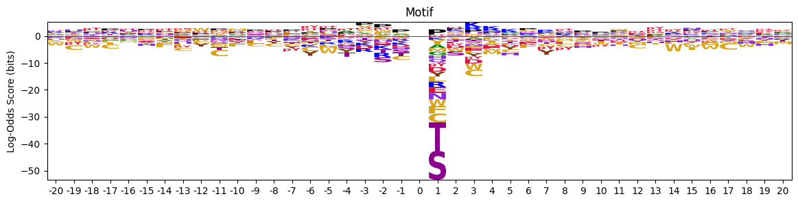
def plot_logo_heatmap_enrich(pssm_df, # column is position, index is aa
title='Motif',
figsize=(17,10),
include_zero=False
):
"""Plot logo and heatmap vertically"""
fig = plt.figure(figsize=figsize)
gs = fig.add_gridspec(2, 2, height_ratios=[1, 5], width_ratios=[4, 1], hspace=0.11, wspace=0)
ax_logo = fig.add_subplot(gs[0, 0])
plot_logo_raw(pssm_df,ytitle="Log-Odds (bits)",ax=ax_logo,title=title)
ax_heatmap = fig.add_subplot(gs[1, :])
plot_heatmap(pssm_df,ax=ax_heatmap,position_label=False,include_zero=include_zero)plot_logo_heatmap_enrich(pssm_LO)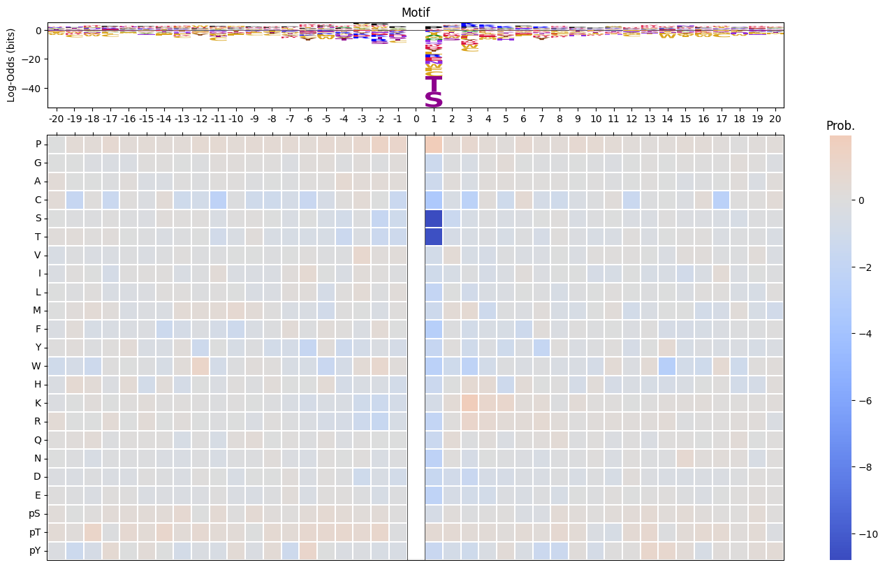
import logomakerfor site_type in ['S','T','Y']:
df_sty = df_k[df_k.acceptor.str.upper()==site_type].copy()
pssm_sty = get_prob(df_sty,'site_seq')
plot_logo_heatmap(pssm_sty,title=f'{site_type} sites (n={len(df_sty):,})',figsize=(17,10))
save_show()
break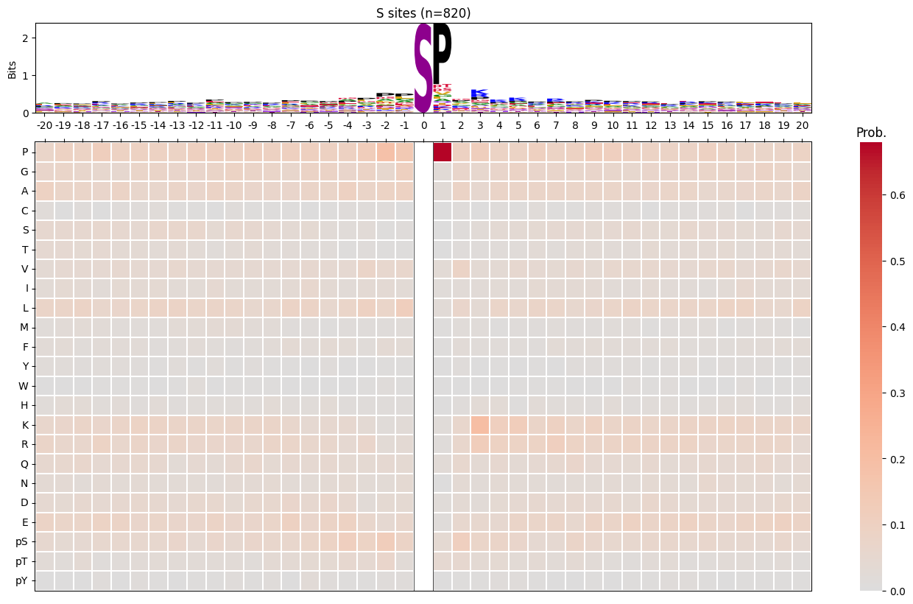
for k in cnt20[40:].index:
df_k = df[df.kinase_uniprot_gene==k].copy()
# df_k = df_k[df_k.num_kin>10]
pssm_df = get_prob(df_k,'site_seq')
# logo heatmap
plot_logo_heatmap(pssm_df,title=f'{k} (n={len(df_k):,})',figsize=(17,10))
path_logo_heatmap=get_path('~/img/cddm/logo_heatmap',f'{k}.svg')
# save_show(path_logo_heatmap)
save_show()
# plot S, T and Y motif
sty_cnt =df.acceptor.value_counts()
for site_type in sty_cnt.index:
df_sty = df_k[df_k.acceptor.str.upper()==site_type].copy()
# freq map
pssm_sty = get_prob(df_sty,'site_seq')
plot_logo_heatmap(pssm_sty,title=f'{site_type} sites (n={len(df_sty):,})',figsize=(17,10))
save_show()
# for log-odds
pssm_LO = get_pssm_LO(pssm_sty,site_type)
plot_logo_heatmap_enrich(pssm_LO,title=f'{site_type} sites (n={len(df_sty):,})',figsize=(17,10))
save_show()
# count of source
path_cnt=get_path('~/img/cddm/cnt',f'{k}.svg')
# plot_cnt_cddm(df_k,path_cnt)
plot_cnt_cddm(df_k)
# histogram of num kin
path_hist=get_path('~/img/cddm/hist',f'{k}.svg')
# plot_hist_cddm(df_k,path_hist)
plot_hist_cddm(df_k)
# # onehot of sequences
# df_k,onehot_10 = get_onehot_add_cluster(df_k,n=10)
# path_pca= get_path('~/img/cddm/pca',f'{k}.svg')
# # plot_onehot(onehot_10,df_k.cluster,path_pca)
# plot_onehot(onehot_10,df_k.cluster)
# path_klogo= get_path('~/img/cddm/klogo',f'{k}.svg')
# # get_kmeans_logos(df_k,path_klogo)
# get_kmeans_logos(df_k)
break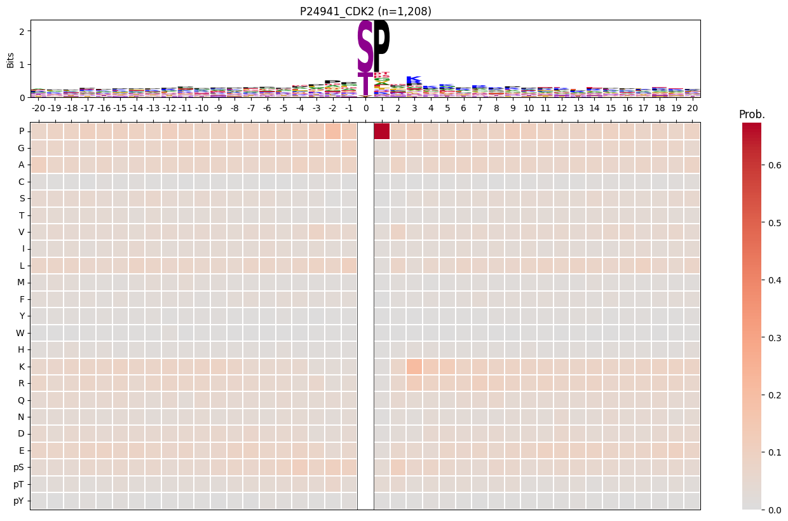

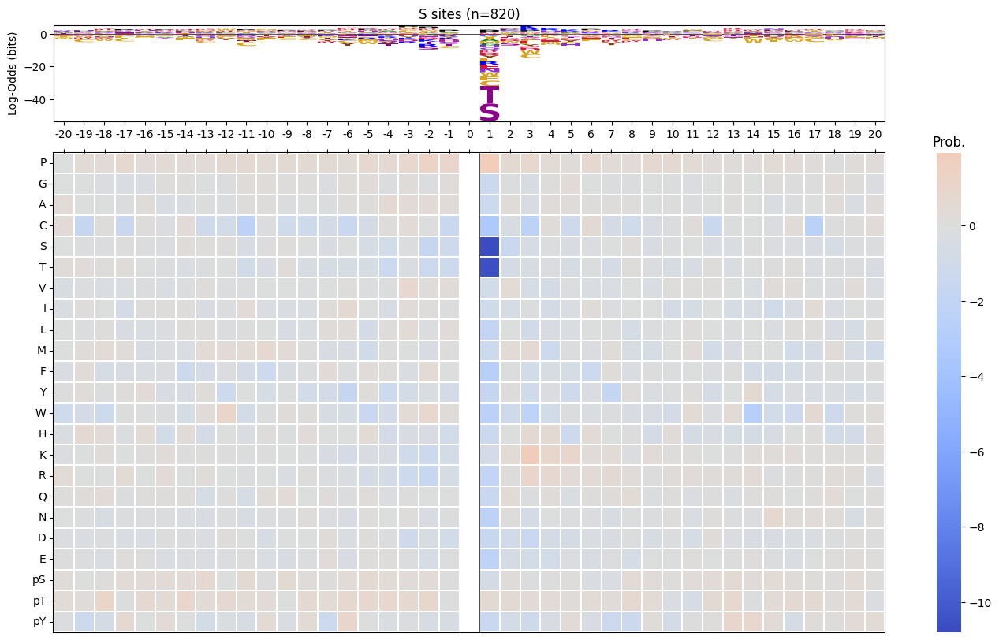
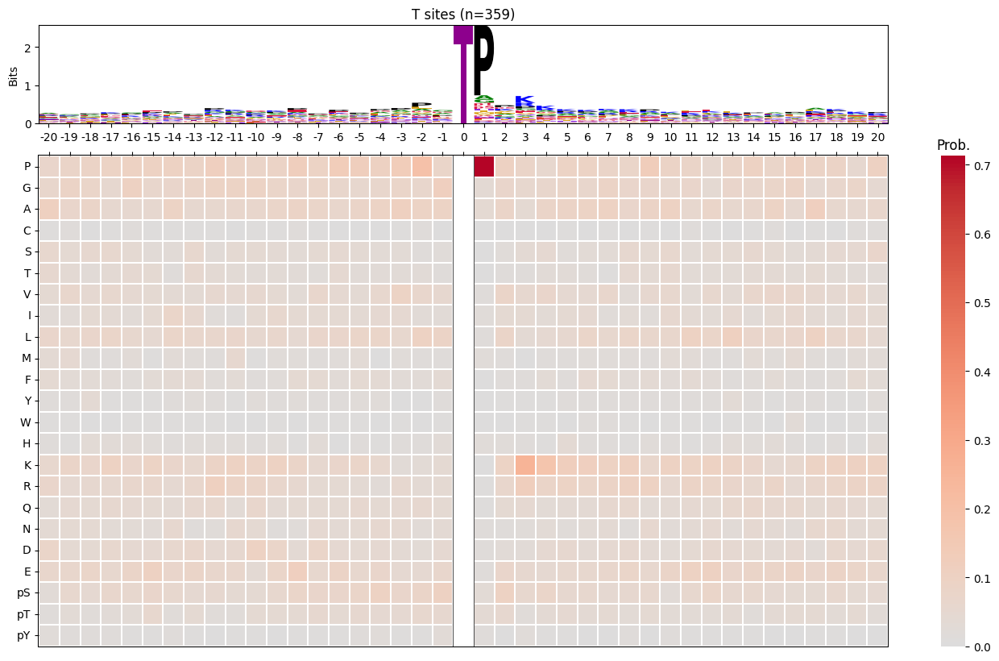
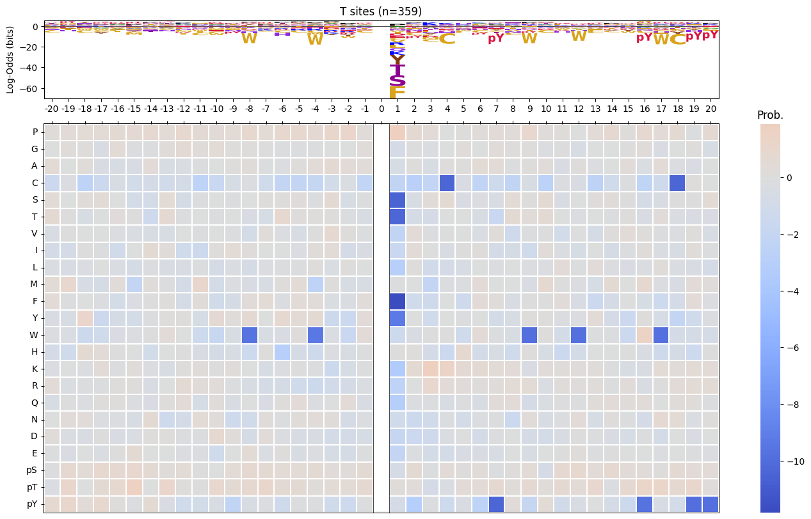
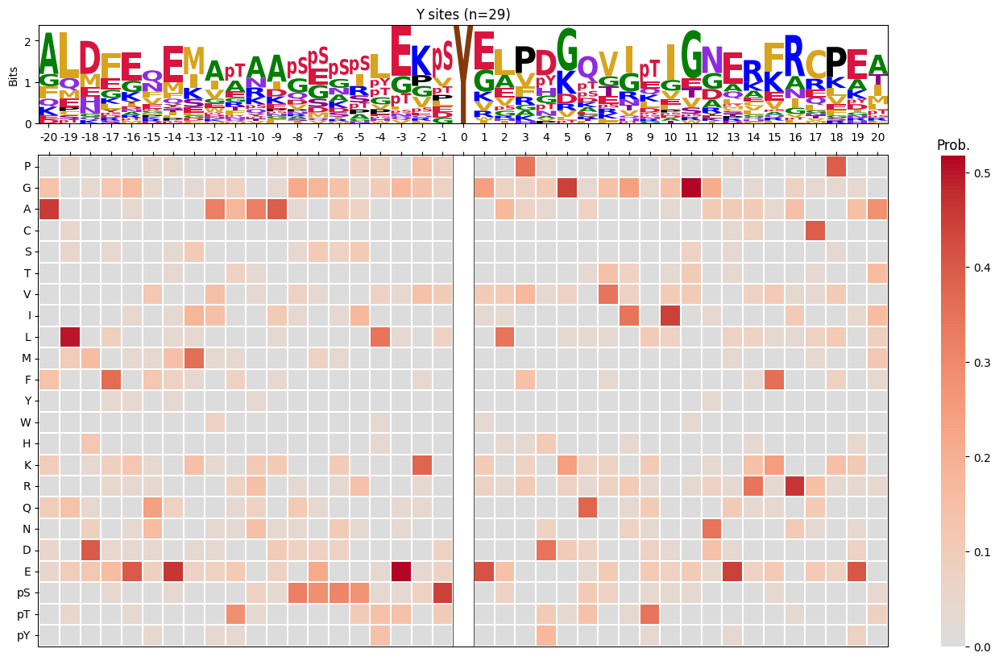
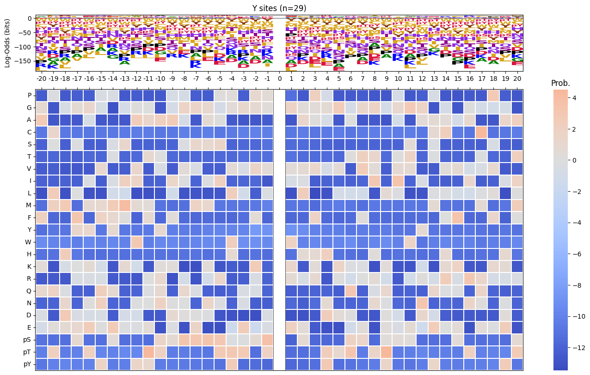
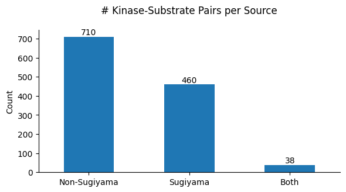
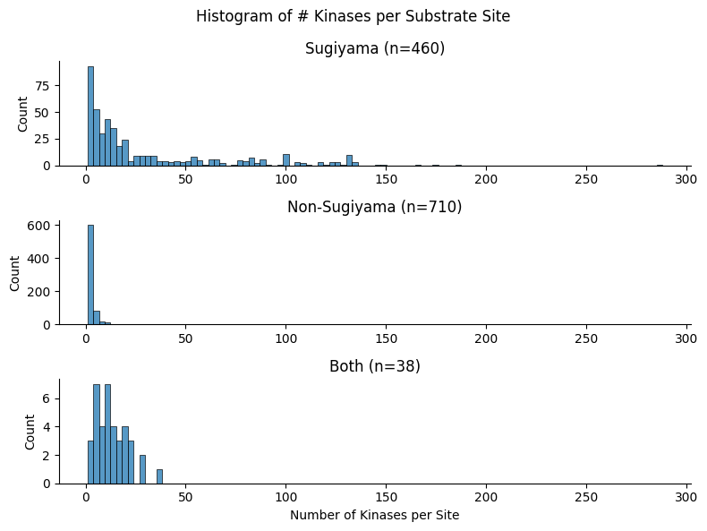
# df_k.source.value_counts()means = np.array([a.mean() for a in arrays])
im_sw = 1 - (means - means.min()) / (means.max() - means.min())inverse mean
def get_im(values): returnimport matplotlib.pyplot as plt
import seaborn as sns
from katlas.core import *
from katlas.plot import *
from scipy.stats import spearmanr, pearsonr
import os
from PIL import Image
from tqdm import tqdmdef plot_count(df_k,title):
# Get value counts
source_counts = df_k.source.replace({'pplus':'PP','large_scale':'LS'}).value_counts()
plt.figure(figsize=(7,1))
source_counts.plot(kind='barh', stacked=True, color=['darkred', 'darkblue'])
# Annotate with the actual values
for index, value in enumerate(source_counts):
plt.text(value, index, str(value),fontsize=10,rotation=-90, va='center')
plt.xlabel('Count')
plt.title(title)sns.set(rc={"figure.dpi":200, 'savefig.dpi':200})
sns.set_context('notebook')
sns.set_style("ticks")Load data
df = Data.get_ks_dataset()
df['SUB'] = df.substrate.str.upper()info = Data.get_kinase_info().query('pseudo=="0"')# It only contains kinase on the tree
cnt = df.kinase_paper.value_counts()ST = info[info.group!="TK"].kinasedf[df.kinase_paper.isin(ST)].kinase_paper.value_counts()[10:20]NEK6 950
PLK1 943
CK2A1 919
P38D 907
DYRK2 907
HGK 902
TTBK1 896
MST3 890
MST1 884
IKKE 880
Name: kinase_paper, dtype: int64cnt = cnt[cnt>100]Generate example figures
def plot_heatmap2(matrix, title, figsize=(6,10), label_size=20):
plt.figure(figsize=figsize)
sns.heatmap(matrix, cmap='binary', annot=False,cbar=False)
plt.title(title,fontsize=label_size)
# Set the font size for the tick labels
plt.xticks(fontsize=label_size)
plt.yticks(fontsize=label_size)
plt.xlabel('')
plt.ylabel('')kinase_list = ['SRC','ABL1','ERK2','PKACA']sns.set(rc={"figure.dpi":200, 'savefig.dpi':200})
sns.set_context('notebook')
sns.set_style("ticks")
for k in kinase_list:
df_k = df.query(f'kinase=="{k}"')
df_k = df_k.drop_duplicates(subset='SUB').reset_index()
paper,full = get_freq(df_k)
plot_heatmap2(full.drop(columns=[0]),f'{k}',figsize=(6,10))
plt.show()
plt.close()
break
# if you want to generate and save all of figures, uncomment below
# plt.savefig(f'fig/{k}.png',bbox_inches='tight', pad_inches=0.3)
# plt.close()
Generate all figures
Uncomment plt.savefig to save figures
sns.set(rc={"figure.dpi":200, 'savefig.dpi':200})
sns.set_context('notebook')
sns.set_style("ticks")
for k in tqdm(cnt.index,total=len(cnt)):
df_k = df.query(f'kinase=="{k}"')
plot_count(df_k,k)
# plt.savefig(f'fig/count/{k}.png',bbox_inches='tight', pad_inches=0.1)
plt.show() # if visualize in jupyter notebook, uncheck the savefig
plt.close()
df_k = df_k.drop_duplicates(subset='SUB').reset_index()
paper,full = get_freq(df_k)
get_logo2(full, k)
# plt.savefig(f'fig/logo/{k}.png',bbox_inches='tight', pad_inches=0.3)
plt.show()
plt.close()
plot_heatmap(full.drop(columns=[0]),f'{k} (n={len(df_k)})',figsize=(7.5,10))
# plt.savefig(f'fig/heatmap/{k}.png',bbox_inches='tight', pad_inches=0)
plt.show()
plt.close()
# break
break 0%| | 0/289 [00:00<?, ?it/s]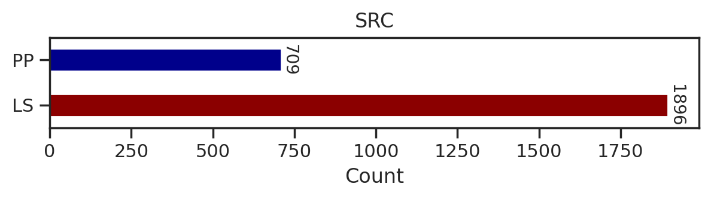

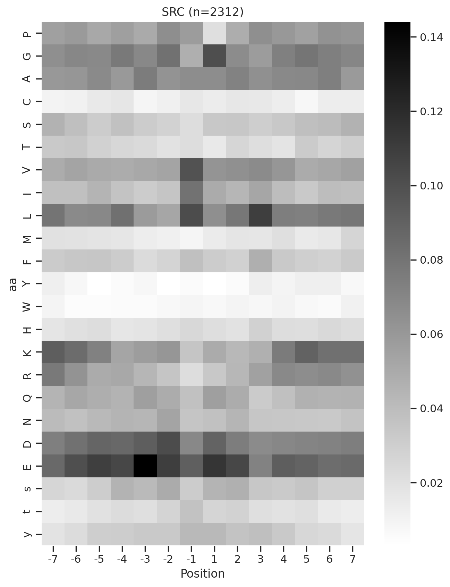
0%| | 0/289 [00:02<?, ?it/s]Combine figures for pdf
def combine_images_vertically(image_paths, output_path):
images = [Image.open(image_path).convert('RGBA') for image_path in image_paths]
total_width = max(image.width for image in images)
total_height = sum(image.height for image in images)
combined_image = Image.new('RGBA', (total_width, total_height))
y_offset = 0
for image in images:
combined_image.paste(image, (0, y_offset), image)
y_offset += image.height
combined_image.save(output_path)Uncomment below to run
# folders = ["fig/count", "fig/logo", "fig/heatmap"]
# for k in tqdm(cnt.index,total=len(cnt)):
# filename = f"{k}.png"
# image_paths = [os.path.join(folder, filename) for folder in folders]
# output_path = f"fig/combine/{k}.png"
# combine_images_vertically(image_paths, output_path)
# # breakGet PSSM data of CDDM
for i,k in enumerate(cnt.index):
df_k = df.query(f'kinase=="{k}"')
df_k = df_k.drop_duplicates(subset='SUB').reset_index()
paper,full = get_freq(df_k)
melt = full.drop(columns = [0]).reset_index().melt(id_vars=['aa'], value_name=k, var_name='Position')
melt['substrate']=melt['Position'].astype(str)+ melt['aa']
position_0 = full[0][['s','t','y']].reset_index().rename(columns={0:k})
position_0['substrate'] = '0'+position_0['aa']
if i ==0:
first = pd.concat([melt,position_0])[['substrate',k]].set_index('substrate')
else:
k = pd.concat([melt,position_0])[['substrate',k]].set_index('substrate')
data = pd.concat([first,k],axis=1)
first = data.copy()
# breakdata = data.T
data.index = data.index.rename('kinase')To save
# data.to_csv('supp/CDDM.csv')
# data.to_parquet('ks_main.parquet')Get specialized CDDM data for all-capital substrates
combine s,t,y to S,T,Y
# List of suffixes
suffixes = ['S', 'T', 'Y']
for suffix in suffixes:
for i in range(-7, 8): # looping from -7 to 7
if i == 0: # Skip 0
continue
upper_col = f"{i}{suffix}" # e.g., -7S
lower_col = f"{i}{suffix.lower()}" # e.g., -7s
data[upper_col] = data[upper_col] + data[lower_col]
data.drop(lower_col, axis=1,inplace=True) # Drop the lowercase column after combiningdata.columns[data.columns.str.contains('S')]Index(['-7S', '-6S', '-5S', '-4S', '-3S', '-2S', '-1S', '1S', '2S', '3S', '4S',
'5S', '6S', '7S'],
dtype='object', name='substrate')# make sure the "s" in positions other than 0 is deleted from the columns
data.columns[data.columns.str.contains('s')]Index(['0s'], dtype='object', name='substrate')# Make sure very position's sum is 1
data.loc[:,data.columns.str.contains('-7')].sum(1).sort_values()kinase
DDR2 1.0
NEK11 1.0
MSK1 1.0
TEK 1.0
NIM1 1.0
...
CAMK2G 1.0
PKG2 1.0
MELK 1.0
NEK1 1.0
TLK2 1.0
Length: 289, dtype: float64data = data.rename(columns={'0s':'0S','0t':'0T','0y':'0Y'})data.index = data.index.rename('kinase')To save
# data.to_parquet('ks_main_upper.parquet')
# data.to_csv('supp/CDDM_upper.csv')Plot other kinases (mutated, lipid kinase, isoforms)
kinases not on kinome tree
cnt_other = df.query('on_tree==0').kinase.value_counts()
cnt_other = cnt_other[cnt_other>100]others = cnt_other.index.tolist()+['LYN','ABL1','RET','FGFR3','PDGFRA','ALK',
'EGFR','KIT','MET','PKCB','BRAF','PKG1'] # BRAF is less than 100Uncheck savefig to save figures
for k in tqdm(others,total=len(others)):
df_k = df.query(f'kinase=="{k}"')
plot_count(df_k,k)
# plt.savefig(f'fig_others/count/{k.replace("/", "_")}.png',bbox_inches='tight', pad_inches=0.1)
plt.show() # if visualize in jupyter notebook, uncheck the savefig
plt.close()
df_k = df_k.drop_duplicates(subset='SUB').reset_index()
paper,full = get_freq(df_k)
get_logo2(full,k)
# plt.savefig(f'fig_others/logo/{k.replace("/", "_")}.png',bbox_inches='tight', pad_inches=0.3)
plt.show()
plt.close()
plot_heatmap(full.drop(columns=[0]),f'{k} (n={len(df_k)})',figsize=(7.5,10))
# plt.savefig(f'fig_others/heatmap/{k.replace("/", "_")}.png',bbox_inches='tight', pad_inches=0)
plt.show()
plt.close()
break 0%| | 0/36 [00:00<?, ?it/s]
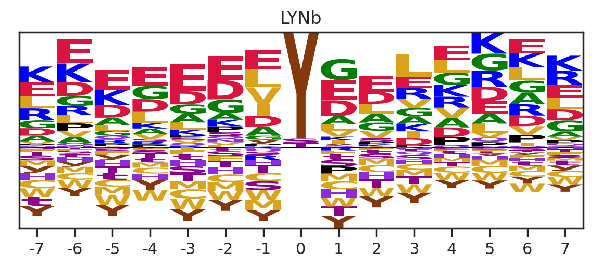

0%| | 0/36 [00:01<?, ?it/s]Combine the figures for pdf
Uncomment below to run
# folders = ["fig_others/count", "fig_others/logo", "fig_others/heatmap"]
# for k in tqdm(others,total = len(others)):
# k = k.replace("/", "_")
# filename = f"{k}.png"
# image_paths = [os.path.join(folder, filename) for folder in folders]
# output_path = f"fig_others/combine/{k}.png"
# combine_images_vertically(image_paths, output_path)
# # breakGet the PSSMs of other kinases
for i,k in enumerate(others):
df_k = df.query(f'kinase=="{k}"')
df_k = df_k.drop_duplicates(subset='SUB').reset_index()
paper,full = get_freq(df_k)
melt = full.drop(columns = [0]).reset_index().melt(id_vars=['aa'], value_name=k, var_name='Position')
melt['substrate']=melt['Position'].astype(str)+ melt['aa']
position_0 = full[0][['s','t','y']].reset_index().rename(columns={0:k})
position_0['substrate'] = '0'+position_0['aa']
if i ==0:
first = pd.concat([melt,position_0])[['substrate',k]].set_index('substrate')
else:
k = pd.concat([melt,position_0])[['substrate',k]].set_index('substrate')
data = pd.concat([first,k],axis=1)
first = data.copy()data = data.T
data.index = data.index.rename('kinase')To save:
# data.to_csv('supp/CDDM_others.csv')
# data.to_parquet('ks_others.parquet')